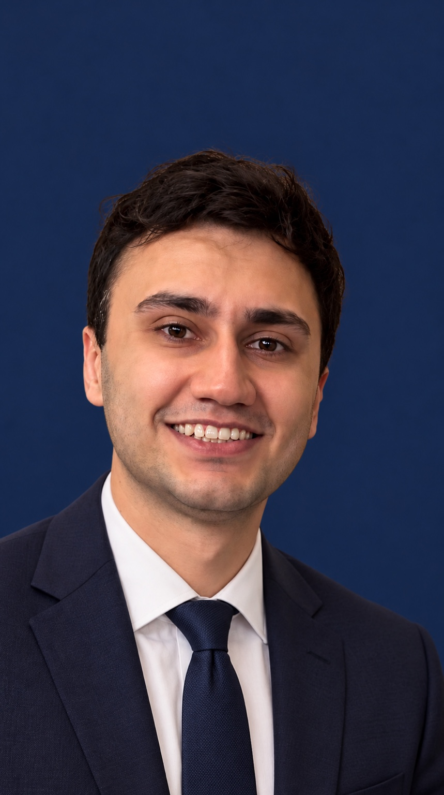

Mohammad Mojtaba Sadafi
Ph.D. Candidate
Metamaterials Laboratory
Department of Electrical and Computer Engineering
Northeastern University
About Me
I am a Ph.D. candidate in Electrical and Computer Engineering at Northeastern University, advised by Professor Hossein Mosallaei. My research focuses on time-varying photonic systems, particularly active and time-varying metasurfaces, photonic time crystals, and their interactions with classical and quantum light. I combine theoretical and computational approaches to investigate and control light–matter interactions in dynamic photonic structures, with applications in quantum photonics, optical modulation, and wavefront engineering.
Research Interests
Time-Varying Media · Photonic Time Crystals · Metasurfaces · Quantum Photonics · Singular Optics
Academic Service
Peer Reviewer
Physical Review Letters · Physical Review Applied · Physical Review Research · Physical Review A · Physical Review B · Optics Letters · Progress in Electromagnetics Research · IEEE Journal on Selected Areas in Communications